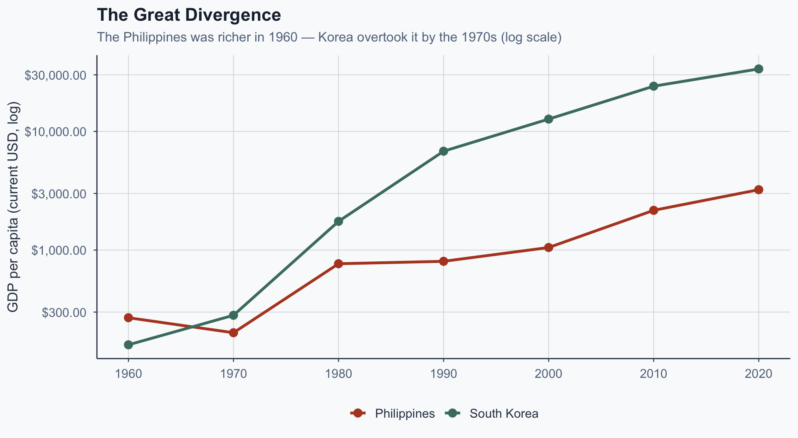
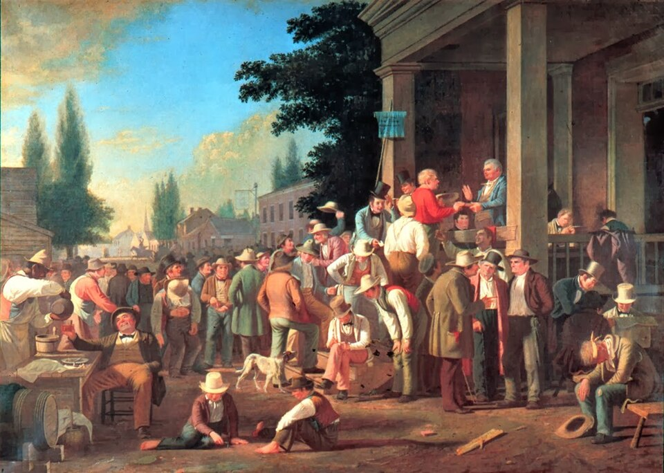
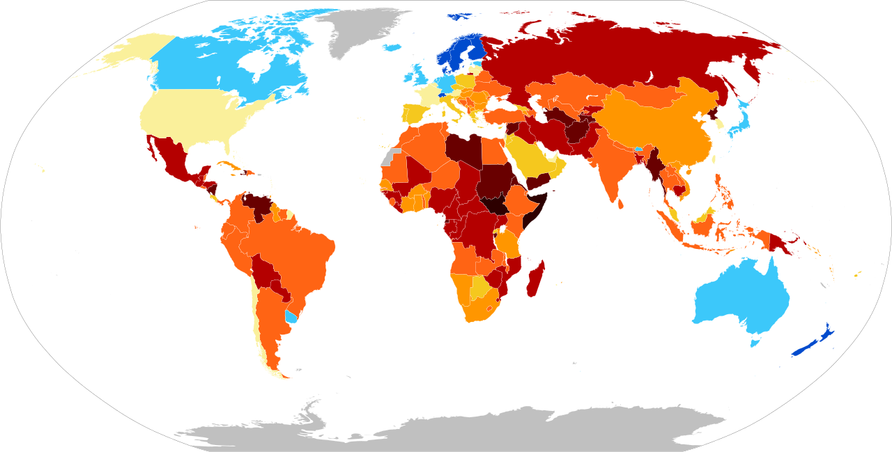
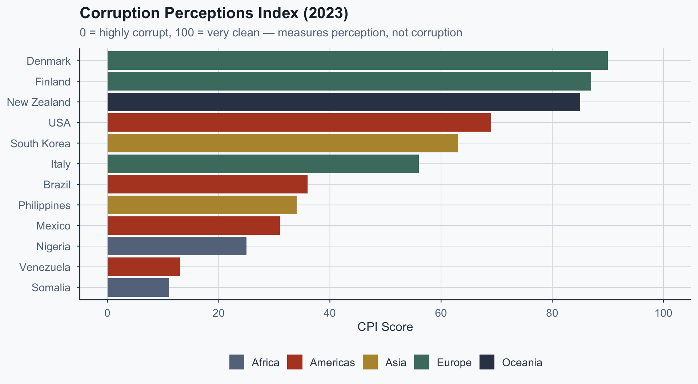
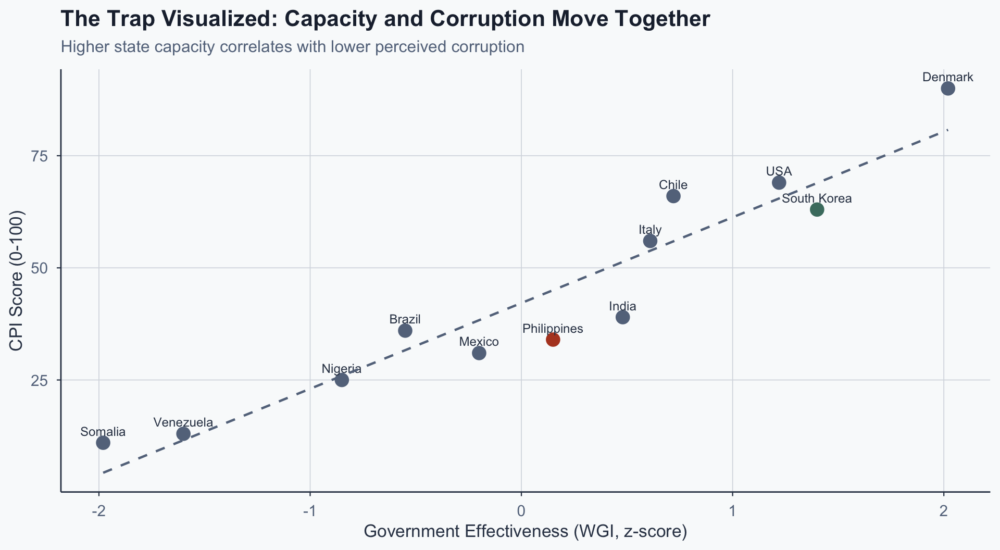

![]()
%%{init: {'theme': 'base', 'themeVariables': {'fontSize': '20px', 'primaryColor': '#ffffff', 'primaryTextColor': '#1e293b', 'lineColor': '#334155', 'primaryBorderColor': '#334155'}, 'flowchart': {'useMaxWidth': true, 'nodeSpacing': 50, 'rankSpacing': 70}}}%%
flowchart LR
A["<b>Patron</b><br/>Controls resources"] ---|"Material benefits<br/>(jobs, transfers, access)"| B["<b>Client</b><br/>Needs goods/services"]
B ---|"Political support<br/>(votes, loyalty, turnout)"| A
C["<b>Broker</b><br/>Monitors & enforces"] --- A
C --- B
style A fill:#ffffff,stroke:#4a7c6f,stroke-width:2px
style B fill:#ffffff,stroke:#334155,stroke-width:2px
style C fill:#ffffff,stroke:#64748b,stroke-width:2px
Comparative Politics
Lecture 13: Corruption, Clientelism, and Accountability
I. The Puzzle
Two Countries, One Starting Point
- 1960s: Both deeply clientelistic
- Philippines was richer per capita
- Both US-aligned Cold War allies
- Both ran on patronage networks
- By 2000: radically different outcomes
Seoul today. Source: Wikimedia Commons.
The Divergence

Figure 1: GDP per capita divergence. Source: World Bank (2023).
What Explains the Gap?
- Not geography — both Pacific-facing
- Not colonial legacy alone
- Key: one broke the loop; one deepened it
- Park insulated technocratic agencies
- Marcos entrenched patronage oligarchy
The Lecture Question
- What is clientelism, and why persist?
- How does it trap states?
- When and how do countries escape?
Manila, Philippines. Source: Wikimedia Commons.
II. Conceptual Foundations
Three Concepts, Often Conflated
| Concept | Definition | Key feature |
|---|---|---|
| Corruption | Abuse of office for private gain | A transaction |
| Clientelism | Benefits exchanged for political support | A relationship |
| Patronage | Discretionary allocation of public jobs | An organizational resource |
Why the Distinctions Matter
- Corruption is one-off; clientelism is ongoing
- Clientelism involves obligation and monitoring
- Patronage is supply infrastructure for clientelism
- Bribe is impersonal; patron-client tie is social
- Conflating them leads to wrong prescriptions
Clientelism as a Relationship
Source: Author’s illustration based on Scott (1972).
What Makes It Sticky?
- Asymmetric power: patron controls access
- Social embeddedness: ties are personal
- Iterative exchange: repeated interaction builds norms
- Monitoring: brokers track compliance locally
III. Why Does Clientelism Persist?
The Demand Side
- Poor voters prefer certain small transfers now
- Programmatic promises are uncertain, delayed
- Clientelism provides insurance (Stokes, 2005)
- Income volatility makes bird-in-hand rational
- Not ignorance — rational risk management
The Supply Side
- Parties with weak programmatic credibility
- Strong local networks but no policy brand
- Targeted benefits solve mobilization problem
- Cheaper than programmatic infrastructure
- Equilibrium serves both parties and voters
The Clientelistic Equilibrium
%%{init: {'theme': 'base', 'themeVariables': {'fontSize': '20px', 'primaryColor': '#4a7c6f', 'primaryTextColor': '#1e293b', 'lineColor': '#334155', 'primaryBorderColor': '#334155'}, 'flowchart': {'useMaxWidth': true, 'nodeSpacing': 50, 'rankSpacing': 70}}}%%
flowchart LR
A["<b>Poverty &<br/>income volatility</b>"] --> B["<b>Voters prefer<br/>certain transfers</b>"]
B --> C["<b>Parties invest in<br/>targeted delivery</b>"]
C --> D["<b>No programmatic<br/>infrastructure built</b>"]
D --> A
style A fill:#fbe9e7,stroke:#b44527,stroke-width:2px
style B fill:#fff3e0,stroke:#b7943a,stroke-width:2px
style C fill:#fff3e0,stroke:#b7943a,stroke-width:2px
style D fill:#fbe9e7,stroke:#b44527,stroke-width:2px
Source: Author’s illustration based on Stokes (2005).
The Enforcement Problem
- Secret ballot means can’t verify votes
- So how does vote-buying work?
- Nichter (2008): key distinction
- Not vote-buying but turnout-buying
- Pay supporters to show up

G. C. Bingham, The County Election (1852). Source: Wikimedia Commons.
Vote-Buying vs. Turnout-Buying
| Vote-buying | Turnout-buying | |
|---|---|---|
| Target | Opponents / swing voters | Own supporters |
| Goal | Preference change | Mobilization |
| Verification | Very hard | Easier (showed up?) |
| Defection risk | High | Low |
| Broker role | Persuade | Monitor attendance |
Brokers as Enforcement Technology
- Local brokers monitor neighborhoods
- Track who attended rallies, who voted
- Social pressure in small communities
- Brokers are the infrastructure, not cash
- Remove brokers and clientelism collapses
The Korea/Philippines Anchor
- Marcos: turnout-buying via barangay captains
- Local brokers monitored, rewarded, punished
- Park: dismantled broker networks
- Replaced with bureaucratic service delivery
- Removed the enforcement infrastructure
Exercise 1
Demand or Supply? (5 min)
Two scenarios:
- Country A: Universal cash transfer ($50/month). Clientelistic party loses 15% vote share.
- Country B: Same program via local party offices. Party vote share increases.
Which is demand-side disruption vs. supply-side capture? Where is the binding constraint?
IV. Measurement
The Fundamental Problem
- Corruption is hidden by definition
- Participants actively conceal it
- Must infer from indirect evidence
- Three approaches, each with limitations
Approach 1: Surveys
- Afrobarometer, LAPOP: “Were you bribed?”
- Captures reported experience
- Problem: social desirability bias
- Thresholds vary across cultures
- Useful for patterns, not precise estimates
Approach 2: Perception Indices
- TI Corruption Perceptions Index
- World Bank WGI
- Aggregated expert/business surveys
- Measure reputation, not corruption
- Treat as noisy signal

Clean (80+) 60–79 40–59 20–39 Corrupt (0–19)
Source: Transparency International via Wikimedia Commons.
Corruption Perceptions Index, 2023

Figure 2: CPI scores for selected countries. Source: Transparency International (2023).
What the CPI Cannot Tell You
- Cannot distinguish corruption types
- Conflates petty and grand corruption
- Expert perceptions lag actual reform
- Rich countries: corruption may be legal (lobbying)
- Use with caution as dependent variable
Approach 3: Behavioral Audits
- Ferraz & Finan (2008): Brazil’s audit lottery
- Random municipalities selected for audit
- Quasi-experimental design
- Audited mayors punished at ballot box
- Clean identification of accountability
Ferraz & Finan: The Design
%%{init: {'theme': 'base', 'themeVariables': {'fontSize': '20px', 'primaryColor': '#4a7c6f', 'primaryTextColor': '#1e293b', 'lineColor': '#334155', 'primaryBorderColor': '#334155'}, 'flowchart': {'useMaxWidth': true, 'nodeSpacing': 50, 'rankSpacing': 70}}}%%
flowchart LR
A["<b>Random audit<br/>lottery</b>"] --> B["<b>Some municipalities<br/>audited</b>"]
B --> C["<b>Corruption<br/>revealed</b>"]
C --> D["<b>Information<br/>disseminated</b>"]
D --> E["<b>Voters punish<br/>corrupt mayors</b>"]
style A fill:#e8f5e9,stroke:#4a7c6f,stroke-width:2px
style B fill:#e8f5e9,stroke:#4a7c6f,stroke-width:2px
style C fill:#fbe9e7,stroke:#b44527,stroke-width:2px
style D fill:#fff3e0,stroke:#b7943a,stroke-width:2px
style E fill:#e8f5e9,stroke:#4a7c6f,stroke-width:2px
Source: Author’s illustration based on Ferraz & Finan (2008).
The Key Finding
- Disclosed corruption led to a drop in incumbent’s likelihood of re-election by approximately 20 percent
- Effect strongest with local media coverage
- Without information, no electoral punishment
- Accountability = information + elections
- Corruption is punishable — if voters know
V. The Low-Capacity Trap
The Core Logic
- Weak states can’t deliver goods impersonally
- Citizens turn to patrons for access
- Patrons resist bureaucratic reform
- Clientelism undermines state capacity further
- Mutual reinforcement creates stable trap
The Low-Capacity Trap
%%{init: {'theme': 'base', 'themeVariables': {'fontSize': '20px', 'primaryColor': '#4a7c6f', 'primaryTextColor': '#1e293b', 'lineColor': '#334155', 'primaryBorderColor': '#334155'}, 'flowchart': {'useMaxWidth': true, 'nodeSpacing': 50, 'rankSpacing': 70}}}%%
flowchart LR
A["<b>Weak state<br/>capacity</b>"] --> B["<b>Citizens rely<br/>on patrons</b>"]
B --> C["<b>Patrons gain<br/>political power</b>"]
C --> D["<b>Patrons block<br/>bureaucratic reform</b>"]
D --> A
style A fill:#fbe9e7,stroke:#b44527,stroke-width:2px
style B fill:#fff3e0,stroke:#b7943a,stroke-width:2px
style C fill:#fff3e0,stroke:#b7943a,stroke-width:2px
style D fill:#fbe9e7,stroke:#b44527,stroke-width:2px
Source: Author’s illustration.
Government Effectiveness and CPI

Figure 3: State capacity and corruption perceptions. Source: World Bank WGI & TI (2023).
Korea: Breaking the Trap
- Insulated Economic Planning Board
- Merit-based technocrat recruitment
- Cold War pressure for developmental results
- Method was authoritarian repression, not reform
- Raises question: can democracies replicate this?
Park Chung-hee, President of South Korea (1963–1979). Source: Wikimedia Commons.
Philippines: Deepening the Trap
- Had equivalent formal institutions
- Chose not to insulate them
- Patronage served regime survival
- Barangay captains = electoral infrastructure
- Oligarchic families captured local state
- No external pressure to reform
Ferdinand Marcos, President of the Philippines (1965–1986). Source: Wikimedia Commons.
VI. When Do Systems Reform?
Three Exit Mechanisms
- External shocks change elite incentives
- Korea: US pressure, export competition
- Competition makes programmatic policy credible
- Argentina (Weitz-Shapiro, 2012)
- Rising incomes erode the insurance logic
The Programmatic Turn
- As incomes rise, voters need patrons less
- Programmatic promises become more credible
- Parties shift from targeted to universal goods
- Kitschelt & Wilkinson (2007): broad cross-national pattern
- But the transition is not automatic or linear
Why Reform Is Hard
- Incumbents benefit from clientelistic system
- They control the levers of reform
- Collective action problem among reformers
- Brokers resist merit-based recruitment
- Trap is stable; escape requires disruption
Weitz-Shapiro: Competition as Catalyst
- Argentine mayors in competitive districts
- Shifted to programmatic delivery
- Competition made clientelism costly
- Programmatic commitment signals credibility
- Competition can substitute for external shock
Exercise 2
Diagnosing the Trap (5 min)
Korea vs. Philippines comparison:
- Structural factors (income, geography) or political agency (elite choices)?
- Could Ferraz & Finan’s audit logic work under Marcos?
- Name two missing preconditions
- What does this reveal about institutional portability?
Conclusion
Conclusion
- Clientelism is a rational equilibrium, not a moral failing
- Brokers are the infrastructure; cash is secondary
- Weak states and clientelism reinforce each other
- The clearest historical exit was authoritarian
- Democratic paths exist but are slow and fragile
- Uncomfortable implication: the tools that break the trap fastest are the ones democracies cannot use
References
- Calvo, E. & Murillo, M.V. (2004). Who delivers? Partisan clients in the Argentine electoral market. American Journal of Political Science, 48(4), 742-757.
- Ferraz, C. & Finan, F. (2008). Exposing corrupt politicians: The effects of Brazil’s publicly released audits on electoral outcomes. Quarterly Journal of Economics, 123(2), 703-745.
- Kitschelt, H. & Wilkinson, S.I. (2007). Patrons, Clients, and Policies: Patterns of Democratic Accountability and Political Competition. Cambridge: Cambridge University Press.
- Nichter, S. (2008). Vote buying or turnout buying? Machine politics and the secret ballot. American Political Science Review, 102(1), 19-31.
- Scott, J.C. (1972). Patron-client politics and political change in Southeast Asia. American Political Science Review, 66(1), 91-113.
- Stokes, S.C. (2005). Perverse accountability: A formal model of machine politics with evidence from Argentina. American Political Science Review, 99(3), 315-325.
- Weitz-Shapiro, R. (2012). What wins votes: Why some politicians opt out of clientelism. American Journal of Political Science, 56(3), 568-583.
Popescu (JCU) Comparative Politics Lecture 13: Corruption, Clientelism, and Accountability